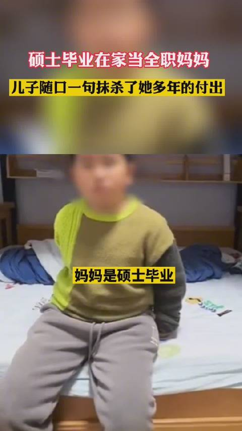

怎么说的好像不是硕士毕业在北京工作，不是不当全职妈妈就有很好的前途，做的家务就得不到认可一样？@粤港澳小小胖:【搜天下】12月24日湖北武汉，硕士毕业在家当全职妈妈，儿子随口一句抹杀了她多年的付出。#从心认识全职妈妈# 粤港澳小小胖的微博视频  229万次播放 00:37
我糊涂了。如丧考妣是褒义还是贬义？//@陆浑戎:……@文冤阁大学士:史景迁去世，昨日朋友圈大面积如丧考妣。有几位引用魏斐德评语：The man writes like an angel. 都翻译成“这个人像天使一样在写”“这个人拥有天使般的书写能力”等等。我怎么读，都不舒服。简简单单的“下笔如有神”，不香吗？